00:02在本视频中，我们将弄清楚如何让梯度下降适用于正则化线性回归。
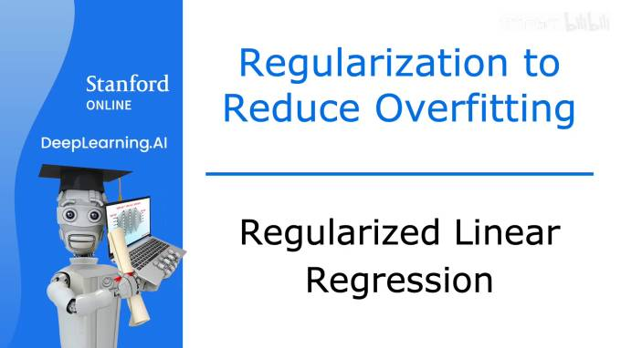
00:10这是我们在上一个视频中为正则化线性回归提出的代价函数。
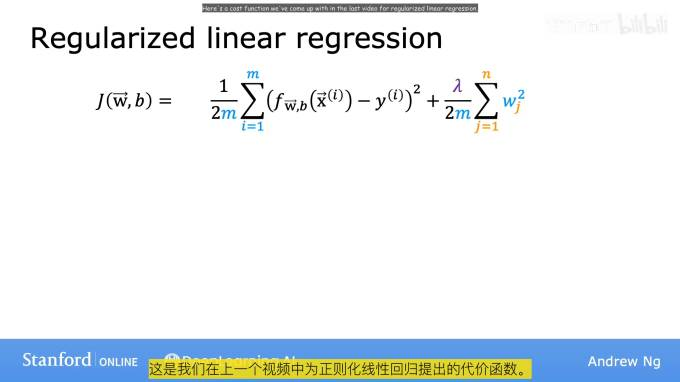
00:16第一部分是常规的平方误差代价函数。
00:21现在你有了这个额外的正则化项，其中 lambda 是正则化参数。
00:28你想要找到能够最小化这个正则化代价函数的参数 w 和 b。
00:35之前，在我们添加第二个正则化项之前，我们对原始的、只有第一项的代价函数使用了梯度下降法。
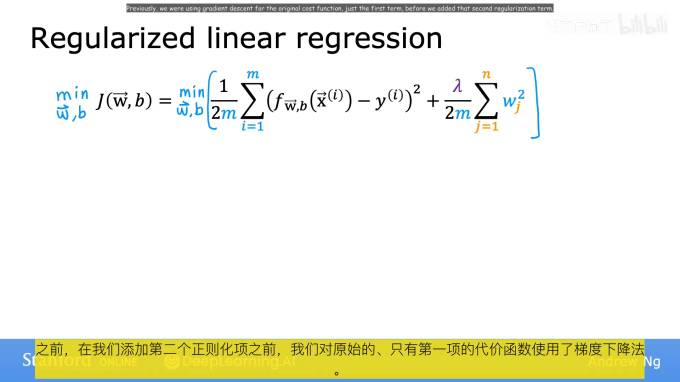
00:46之前，我们有如下的梯度下降算法，即根据这个公式，对于 j 从一到 n，我们反复更新参数 wj，同时 b 也进行类似的更新。
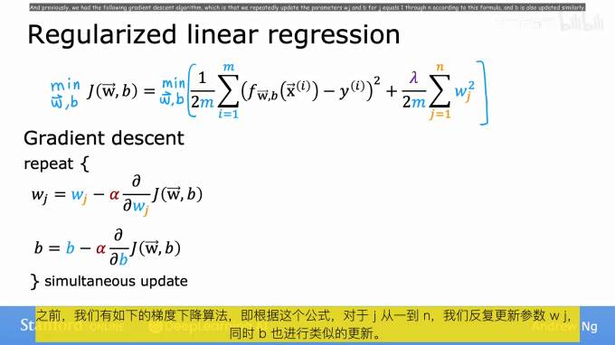
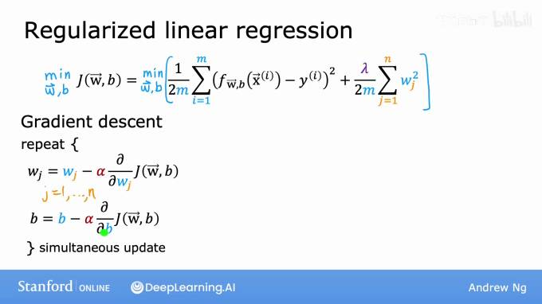
01:02再次强调，alpha 是一个很小的正数，称为学习率。
01:08事实上，正则化线性回归的更新看起来完全一样，只不过现在代价函数的定义略有不同。
01:17之前，对 w 的导数由这个表达式给出，对 b 的导数由这个表达式给出。
01:30现在我们添加了额外的正则化项，唯一的变化是，关于 W 的导数表达式最后会多出一项。
01:42也就是加上 lambda 除以 m 再乘以 w j。
01:48具体来说，对于新定义的代价函数 J，这里的两个表达式就是对 wj 和 J 对 b 的新的导数。
02:03回忆一下，我们不对 b 进行正则化，所以我们不试图缩小 b。
02:10这就是为什么 b 的更新保持不变，而 W 的更新会改变，因为正则化项会导致我们试图缩小 Wj。
02:23那么，让我们采用这些导数的定义，并将它们放回左边的表达式中，写出正则化线性回归的梯度下降算法。
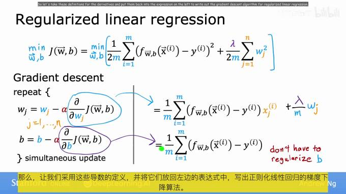
02:35因此，为了实现正则化线性回归的梯度下降，你的代码需要执行以下操作。
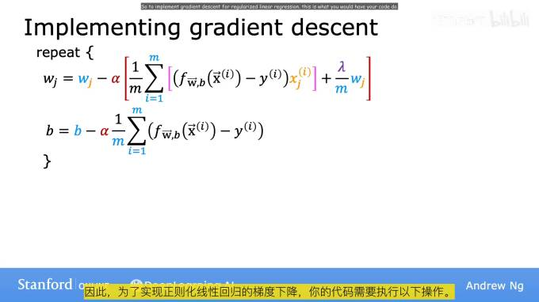
02:43这是对于 j 从一到 n 的 wj 的更新，这是 b 的更新。
02:50像往常一样，请记住对所有参数进行同步更新。
02:58现在，为了让这个算法起作用，你需要了解的就是这些。
03:03但我想在本视频的剩余部分讲一些可选材料。
03:07目的是让你对这个公式实际的作用有一个稍深入的理解，并简要讨论一下这些导数是如何推导出来。
03:17本视频的其余部分完全是可选的。
03:21跳过本视频的剩余部分完全没有问题。
03:25但如果你对数学有浓厚的兴趣，那就请继续跟我看下去。
03:32能在这里陪你一会儿总是件愉快的事。
03:36通过这些方程，也许你也能对数学以及导数的作用建立更深入的理解。
03:44那么，让我门来看一看。
03:46我们来看一下 Wj 的更新规则，并用另一种方式重写它。
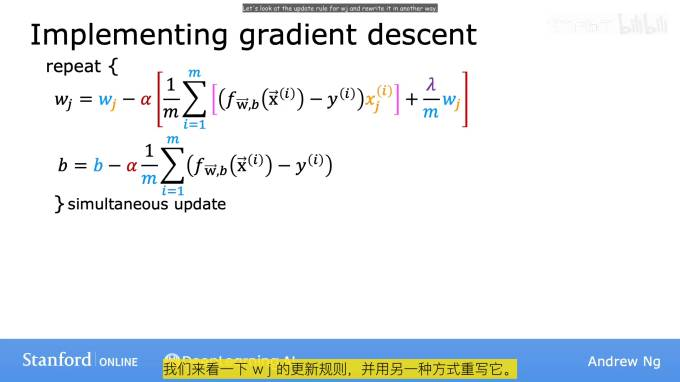
03:53我们正在将 wj 更新为：一乘以 Wj，减去 alpha 乘以 lambda 除以 m 再乘以 w j。
04:05所以我把最后这项移到了前面。
04:09然后减去 alpha 乘以 m 分之一，再乘以后面的那部分项。
04:16我们只是稍微重新排列了一下各项。
04:20如果简化一下，那么我们就是在说，wj 被更新为：wj 乘以括号一减去 alpha 乘以 lambda 除以，再减去 alpha 乘以后面的这一项。
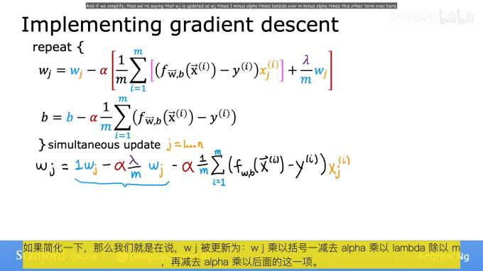
04:35你可能会认出，这第二项正是没有正则化的线性回归的常规梯度下降更新。
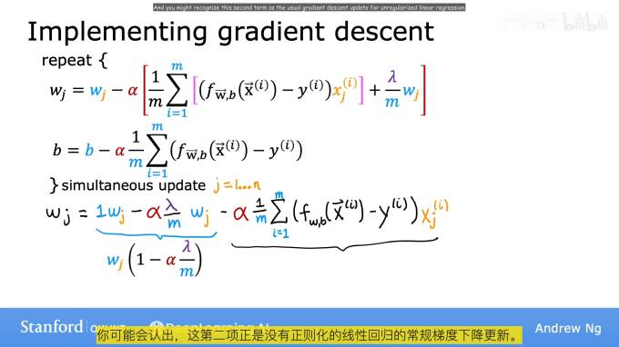
04:44这是我们在有正则化之前的线性回归更新，也是我们在课程第二周看到的项。
04:53因此，添加正则化后唯一的变化是，不再是将 wj 设置为等于 wj 减去 alpha 乘以这一项，而是乘以这个数再减去常规的更新项。
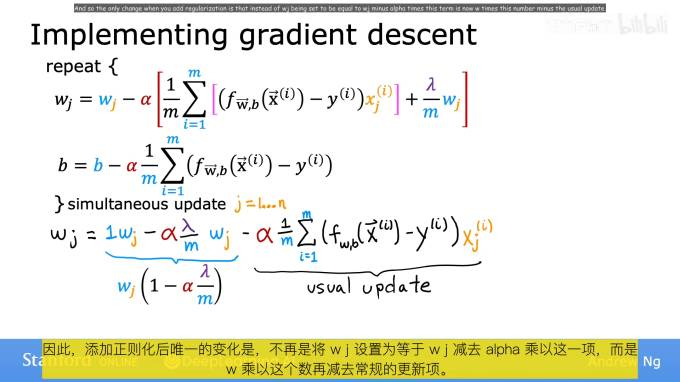
05:08这就是我们课程第一周的内容。
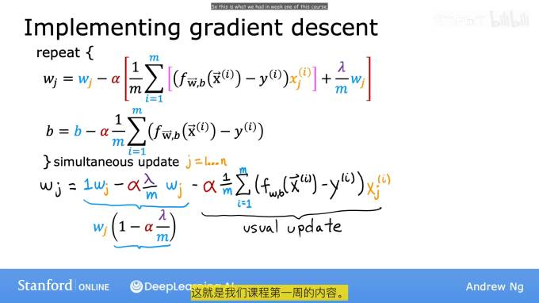
05:12那么，前面的这一项是什么呢？
05:15alpha 是一个非常小的正数，比如零点零一。
05:20lambda 通常是一个小数字，比如一或者十。
05:27在这个例子中，假设 lambda 等于一，m 是训练集大小，比如五十。
05:34那么当你计算 alpha 乘以 lambda 除以 m 时，比如说零点零一乘以一除以五十，这一项最终是一个很小的正数，比如零点零零零二。
05:51因此，一减去 alpha 乘以 lambda 除以 m 将是一个略小于一的数字，在这种情况下为零点九九九八。
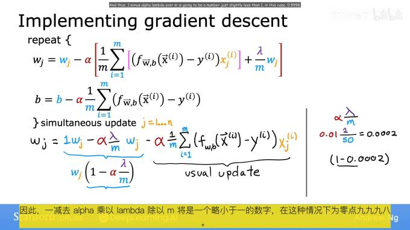
06:01所以这一项的效果是，在梯度下降的每一次迭代中，你在进行常规更新之前，都要将 wj 乘以零点九九九八，也就是乘以一个略小于一的数字。
06:17因此，正则化在每一次迭代中所做的是，将 w 乘以一个略小于一的数字，这会产生使 wj 的值略微缩小的效果。
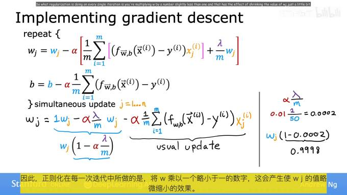
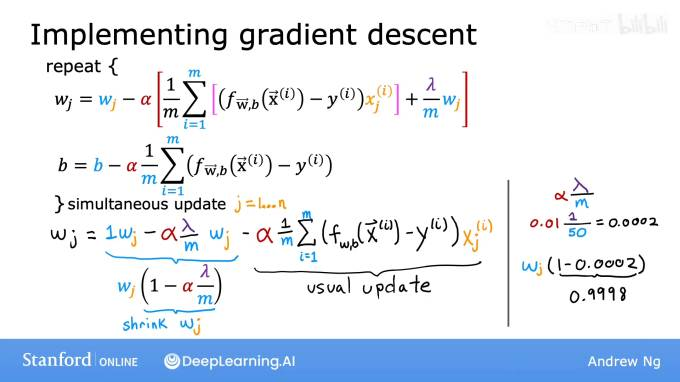
06:30这为我们提供了另一个视角，理解为什么正则化会在每次迭代中产生使参数 wj 略微缩小的效果，这就是正则化的工作原理。
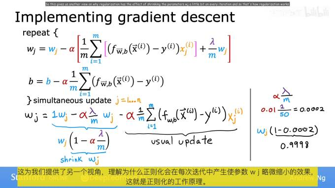
06:42如果你对这些导数项是如何计算出来的感到好奇，我还有最后一张可选的幻灯片，简要介绍一下导数项的计算过程。Andrew。
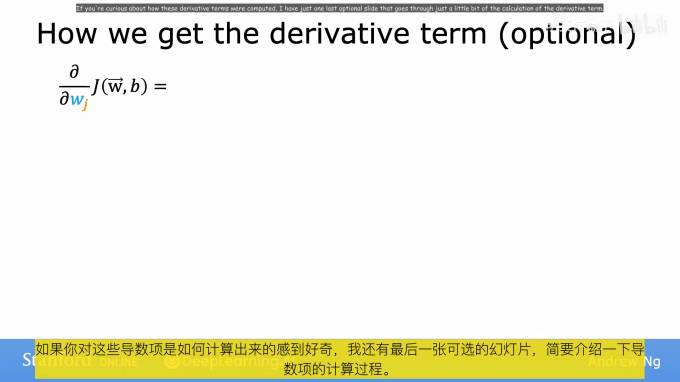
06:53再次强调，这张幻灯片和本视频的其余部分完全是可选的，这意味着你完成练习实验和测验都不需要这些内容。
07:03那么，让我们快速浏览一下导数的计算过程。
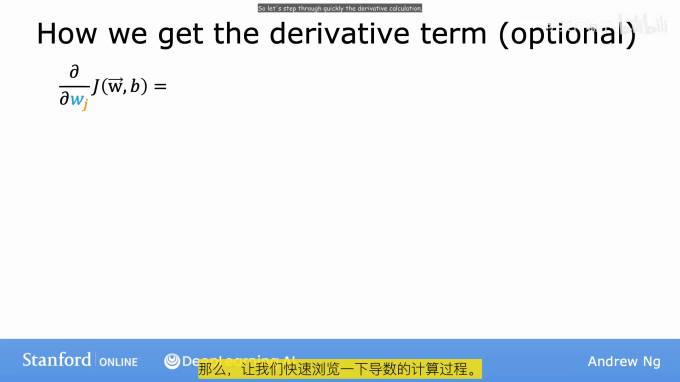
07:06J 对 Wj 的导数看起来是这样的。
07:24回忆一下，线性回归的 f(x) 定义为 w 点乘 x 加上 b，或者说 w 点积 x 再加 b。
07:34根据微积分规则，导数最终看起来是这样的：等于一除以两倍的 m，乘以 i 从一到 m 的和，是 w 点乘 x 加 b 减 y，再乘以两倍的 xj，再加上正则化项的导数，也就是 lambda 除以两倍的 m，再乘以两倍的 wj。
08:04注意，第二项不再有 j 从一到 n 的求和符号。
08:12这里的二和这里的二约掉了，这里的二和这里的二也约掉了。
08:18因此，它简化成了这里的这个表达式。
08:26最后，记住 w 点乘 x 加 b 就是 f(x)，所以你可以把它重写成下面的这个表达式。
08:36这就是为什么使用这个表达式来计算正则化线性回归中的梯度。
08:43那么，现在你知道如何实现正则化线性回归了。
08:48使用这种方法，当你拥有大量特征但训练集相对较小时，它确实能减少过拟合。
08:55这应该能让线性回归在许多问题上表现得更好。在下一个视频中，我们将把这个正则化的思想应用—到逻辑回归上，以避免逻辑回归也出现过拟合。一。
09:10让我们在下一个视频中看看这个内容。